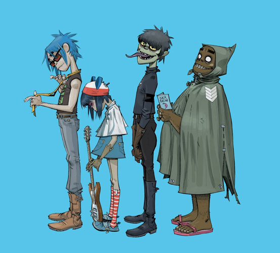
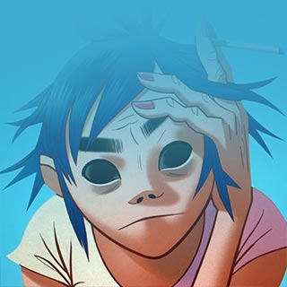
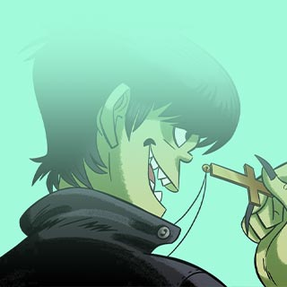
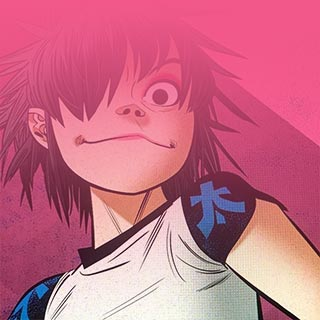
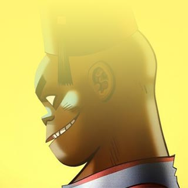
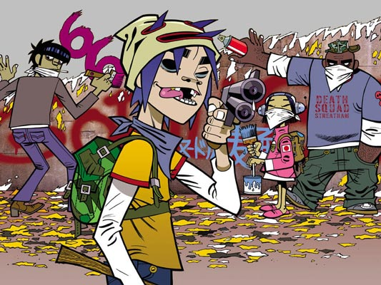

Gorillaz es la banda virtual más conocida del mundo con varios récords Guinness? incluídos. La banda fue creada en 1998 por Damon Albarn y Jamie Hewlett y está compuesta por cuatro
miembros ficticios: 2-D, Noodle, Murdoc Niccals y Russel Hobbs. La mayoría de
sus canciones junto con todo su universo ficticio, se presentan a través de vídeos musicales animados, de
animación tradicional y animación por computadora, entrevistas y pequeños cortos animados.

En la vida real, Albarn es el único miembro permanente de la banda, él es quien compone, escribe produce
las canciones (aparte de también darle voz al vocalista 2-D). El productor y
ejecutivo Remi Kabaka Jr. empezaría a colaborar con el grupo en 2016 después de proveer
por varios años la voz de Russel Hobbs y sería nombrado miembro oficial
junto a Albarn y Hewlett en 2019 en el documental de Gorillaz.
Personajes
2-D
Cantante y pianista

Murdoc
Bajista

Noodle
Guitarrista y cantante

Russel
Baterista

Historia
La historia de Gorillaz es demasiado extensa, pero vale completamente la pena, sin duda te
recomendamos ver el siguiente video, en el cual podrás adentrarte en este mundo increíblemente caótico,
lleno de zombies, demonios y fantasmas creado por las grandes mentes de Damon Albarn y Jamie Hewlett, y en
donde también conocerán más a fondo a los integrantes ficticios de la banda: Murdoc, Russel, Noodle y 2D.
Genero musical
¿Qué genero musical interpreta la banda Gorillaz?
Gorillaz ha interpretado varios géneros musicales, entre ellos el Electro Pop, Art pop, Electrónica, Hip
hop, Trip hop y Rock alternativo, sin embargo en esta ocasión hablaremos del género Hip Hop, ya que es
éste mismo por el cual muchos de nosotros lo conocemos gracias a su canción más famosa "Feel Good Inc."

¿Qué es el Hip Hop?
El hip hop es una forma de cultura y expresión artística que surgió a finales de los años 70 en la ciudad
de N.Y, y desde entonces ha ganado una gran popularidad a nivel mundial.
El hip hop no solo se trata de música, sino que también incluye elementos como la danza, el graffiti, la
moda y la poesía.
¿Cómo se desarrolló el Hip Hop?
El hip hop se desarrolló en un contexto social y político muy específico. La ciudad de
Nueva York estaba sumida? en la pobreza y la violencia, y las comunidades
negras y latinas sufrían la discriminación y la falta de oportunidades. El hip hop surgió como una
forma de expresión y resistencia ante estas condiciones, y como una manera de canalizar? la creatividad y la energía de los jóvenes de la ciudad.
¿Qué caracteriza al género Hip Hop?
Los cuatro elementos originales de la cultura hip-hop son el DJ, el rap, el graffiti y el c.
Si hablamos a nivel musical, el hop hop se caracteriza por sus melodías pegadizas, sus letras sencillas y
estructuras de canciones accesibles, aparte de que sus instrumentos principales suelen ser la batería y el
sintetizador.
¿Te gusta Gorillaz? Si es así, aqui te dejamos un vídeo de Pixel Atómico (anteriormente conocido como "Átomo
Network"), en el cual podrás conocer 107 datos de la banda. ¡No te lo pierdas!